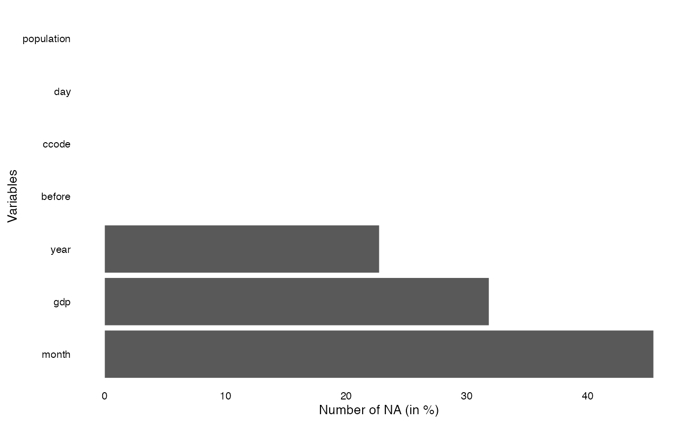

overviewR: Easily Extracting Information About Your Data
Cosima Meyer and Dennis Hammerschmidt
2022-05-21
Source:vignettes/overviewR_vignette.Rmd
overviewR_vignette.RmdThe goal of overviewR is to make it easy to get an overview of a data set by displaying relevant sample information. At the moment, there are the following functions:
-
overview_tabgenerates a tabular overview of the sample. The general sample plots a two-column table that provides information on an id in the left column and a the time frame on the right column. -
overview_crosstabgenerates a cross table. The conditional column allows to disaggregate the overview table by specifying two conditions, hence resulting a 2x2 table. This way, it is easy to visualize the time and scope conditions as well as theoretical assumptions with examples from the data set. -
overview_printconverts the output of bothoverview_tabandoverview_crosstabinto LaTeX code and/or directly into a .tex file. -
overview_plotis an alternative to visualize the sample (a way to present results fromoverview_tab) -
overview_crossplotis an alternative to visualize a cross table (a way to present results fromoverview_crosstab) -
overview_heatplots a heat map of your time line -
overview_naplots an overview of missing values by variable
The plots can be saved using the ggsave() command. The output of overview_tab and overview_crosstab are also compatible with other packages such as xtable, flextable, or knitr.
We present a short step-by-step guide as well as the functions in more detail below.
Installation
A stable version of overviewR can be directly accessed on CRAN:
install.packages("overviewR", force = TRUE)To install the latest development version of overviewR directly from GitHub use:
library(devtools)
devtools::install_github("cosimameyer/overviewR")Tabular overview
overview_tab
First, load the package.
The following examples use a toy data set (toydata) that comes with the package. This data contains artificially generated information in a cross-sectional format on 5 countries, covering the period 1990-1999.
data(toydata)
head(toydata)
#> ccode year month gdp population day
#> 1 RWA 1990 Jan 24180.77 14969.988 1
#> 2 RWA 1990 Jan 23650.53 11791.464 2
#> 3 RWA 1990 Jan 21860.14 30047.979 3
#> 4 RWA 1990 Jan 20801.06 19853.556 4
#> 5 RWA 1990 Jan 18702.84 5148.118 5
#> 6 RWA 1990 Jan 30272.37 48625.140 6There are 264 observations for 5 countries (Angola, Benin, France, Rwanda, and UK) stored in the ccode variable, over a time period between 1990 to 1999 (year) with additional information for the month (month). Additionally, two artificially generated fake variables for GDP (gdp) and population size (population) are included to illustrate of conditions.
The following functions work best on data sets that have an id-time-structure, in the case of toydata this corresponds to country-year with ccode and year. If the data set does not have this format yet, consider using pivot_wider() or pivot_longer() to get to the format.
Generate some general overview of the data set using the time and scope conditions with overview_tab.
output_table <- overview_tab(dat = toydata, id = ccode, time = year)The resulting data frame collapses the time condition for each id by taking into account potential gaps in the time frame. Note that the column name for the time frame is set by default to time_frame and internally generated when using overview_tab.
output_table# ccode time_frame
# RWA 1990 - 1995
# AGO 1990 - 1992
# BEN 1995 - 1999
# GBR 1991, 1993, 1995, 1997, 1999
# FRA 1993, 1996, 1999Multiple time arguments
As of overviewR version 0.0.7 you can also use multiple time objects in overview_tab. You can now pass a list containing multiple time variables with the following format: time = list(year = NULL, month = NULL, day = NULL).
output_table_complex <- overview_tab(dat = toydata, id = ccode,
time = list(year = toydata$year,
month = toydata$month,
day = toydata$day),
complex_date = TRUE)The resulting data frame collapses again the time condition for each id by taking into account potential gaps in the time frame. Note that the column name for the time frame is set by default to time_frame and internally generated when using overview_tab. The output resembles something like this:
output_table_complex ccode time_frame # AGO 1990-01-01, 1990-02-02, 1990-03-03, 1990-04-04, 1990-05-05, 1990-06-06, ...
# BEN 1995-01-01, 1995-02-02, 1995-03-03, 1995-04-04, 1995-05-05, 1995-06-06, ...
# FRA 1993-01-01, 1993-02-02, 1993-03-03, 1993-04-04, 1993-05-05, 1993-06-06, ...
# GBR 1991-01-01, 1991-02-02, 1991-03-03, 1991-04-04, 1991-05-05, 1991-06-06, ...
# RWA 1990-01-01 - 1990-01-12, 1991-01-01 - 1991-01-12, 1992-01-01 - 1992-01-12, 1993-01-01 - 1993-01-12, 1994-01-01
overview_crosstab
To generate a cross table that divides the data based on two conditions, for instance GDP and population size, overview_crosstab can be used. threshold1 and threshold2 thereby indicate the cut point for the two conditions (cond1 and cond2), respectively.
output_crosstab <- overview_crosstab(
dat = toydata,
cond1 = gdp,
cond2 = population,
threshold1 = 25000,
threshold2 = 27000,
id = ccode,
time = year
)The data frame output looks as follows:
# part1 part2
# 1 AGO (1990, 1992), FRA (1993), GBR (1997) BEN (1996, 1999), FRA (1999), GBR (1993), RWA (1992, 1994)
# 2 BEN (1997), RWA (1990) AGO (1991), BEN (1995, 1998), FRA (1996), GBR (1991, 1995, 1999), RWA (1991, 1993, 1995)Note, if a data set is used that has multiple observations on the id-time unit, the function automatically aggregates the data set using the mean of condition 1 (cond1) and condition 2 (cond2).
overview_print
To generate an easily usable LaTeX output for the generated overview_tab and overview_crosstab objects, overviewR offers the function overview_print. The following illustrate this using the output_table object from overview_tab.
overview_print(obj = output_table)LaTeX output
% Overview table generated in R version 4.0.0 (2020-04-24) using overviewR
% Table created on 2020-06-21
\begin{table}[ht]
\centering
\caption{Time and scope of the sample}
\begin{tabular}{ll}
\hline
Sample & Time frame \\
\hline
RWA & 1990 - 1995 \\
AGO & 1990 - 1992 \\
BEN & 1995 - 1999 \\
GBR & 1991, 1993, 1995, 1997, 1999 \\
FRA & 1993, 1996, 1999 \\
\hline
\end{tabular}
\end{table}

The default already provides a title (“Time and scope of the sample”) that can be modified in the argument title. The same holds for the column names (“Sample” and “Time frame” are set by default but can be modified as shown below).
overview_print(
obj = output_table,
id = "Countries",
time = "Years",
title = "Cool new title for our awesome table"
)LaTeX output
% Overview table generated in R version 4.0.0 (2020-04-24) using overviewR
% Table created on 2020-06-21
\begin{table}[ht]
\centering
\caption{Cool new title for our awesome table}
\begin{tabular}{ll}
\hline
Countries & Years \\
\hline
RWA & 1990 - 1995 \\
AGO & 1990 - 1992 \\
BEN & 1995 - 1999 \\
GBR & 1991, 1993, 1995, 1997, 1999 \\
FRA & 1993, 1996, 1999 \\
\hline
\end{tabular}
\end{table}

The same function can also be used for outputs from the overview_crosstab function by using the argument crosstab = TRUE. There are also options to label the respective conditions (cond1 and cond2). Note that this should correspond to the conditions (cond1 and cond2) specified in the overview_crosstab function.
overview_print(
obj = output_crosstab,
title = "Cross table of the sample",
crosstab = TRUE,
cond1 = "GDP",
cond2 = "Population"
)LaTeX output
% Overview table generated in R version 4.0.0 (2020-04-24) using overviewR
% Table created on 2020-06-21
% Please add the following packages to your document preamble:
% \usepackage{multirow}
% \usepackage{tabularx}
% \newcolumntype{b}{X}
% \newcolumntype{s}{>{\hsize=.5\hsize}X}
\begin{table}[ht]
\caption{Cross table of the sample}
\begin{tabularx}{\textwidth}{ssbb}
\hline & & \multicolumn{2}{c}{\textbf{GDP}} \\
& & \textbf{Fulfilled} & \textbf{Not fulfilled} \\
\hline \\
\multirow{2}{*}{\textbf{Population}} & \textbf{Fulfilled} &
AGO (1990, 1992), FRA (1993), GBR (1997) & BEN (1996, 1999), FRA (1999), GBR (1993), RWA (1992, 1994)\\
\\ \hline \\
& \textbf{Not fulfilled} & BEN (1997), RWA (1990) & AGO (1991), BEN (1995, 1998), FRA (1996), GBR (1991, 1995, 1999), RWA (1991, 1993, 1995)\\ \hline \\
\end{tabularx}
\end{table}

overview_print further allows more specifications such as the font size or a a label. These functions are currently supported only in the development version of the package.
overview_print(obj = output_table,
fontsize = "scriptsize",
label = "tab:overview")With save_out = TRUE the function exports the output as a .tex file and stores it on the device.
overview_print(
obj = output_table,
save_out = TRUE,
path = "SET-YOUR-PATH",
file = "output.tex"
)Visual overview
overview_plot
In addition to tables, overviewR also provides plots to illustrate the structure of your data. overview_plot illustrates the information that is generated in overview_table in a ggplot graphic. All scope objects (e.g., countries) are listed on the y-axis where horizontal lines indicate the coverage across the entire time frame of the data (x-axis). This helps to spot gaps in the data for specific scope objects and outlines at what time point they occur.
data(toydata)
overview_plot(dat = toydata, id = ccode, time = year)
The results are sorted alphabetically by default. The order can also be reversed by setting asc to FALSE.
overview_plot(
dat = toydata,
id = ccode,
time = year,
asc = FALSE
)There is also an option to color the time lines conditionally. Here, we introduce a dummy variable that indicates whether the year was before 1995 or not. We use this dummy to color the time lines using the color argument.
library(overviewR) # Easily Extracting Information About Your Data
library(magrittr) # A Forward-Pipe Operator for R
# Code whether a year was before 1995
toydata %<>%
dplyr::mutate(before = ifelse(year < 1995, 1, 0))
# Plot using the `color` argument
overview_plot(
dat = toydata,
id = ccode,
time = year,
color = before
)The development version also allows to change the dot size using the dot_size argument. The default is “2”.
# Plot using the `color` argument
overview_plot(
dat = toydata,
id = ccode,
time = year,
dot_size = 5
)
overview_crossplot
To visualize also the cross table, overview_crossplot does the job.
overview_crossplot(
toydata,
id = ccode,
time = year,
cond1 = gdp,
cond2 = population,
threshold1 = 25000,
threshold2 = 27000,
color = TRUE,
label = TRUE
)
overview_heat
overview_heat takes a closer look at the time and scope conditions by visualizing the data coverage for each time and scope combination in a ggplot heat map. This function is best explained using an example. Suppose you have a dataset with monthly data for different countries and want to know if data is available for each country in every month. overview_heat intuitively does this by plotting a heat map where each cell indicates the coverage for that specific combination of time and scope (e,g., country-year). As illustrated below, the darker the cell is, the more coverage it has. The plot also indicates the relative or absolute coverage of each cell. For instance, Angola (“AGO”) in 1991 shows the coverage of 75%. This means that of all potential 12 months of coverage (12 months for one year), only 9 are covered.
overview_heat(toydata_red,
ccode,
year,
perc = TRUE,
exp_total = 12)
overview_na
overview_na is a simple function that provides information about the content of all variables in your data, not only the time and scope conditions. It returns a horizontal ggplot bar plot that indicates the amount of missing data (NAs) for each variable (on the y-axis). You can choose whether to display the relative amount of NAs for each variable in percentage (the default) or the total number of NAs.
overview_na(toydata_with_na)
overview_na(toydata_with_na, perc = FALSE)
overview_overlap
This function allows to compare two data sets. We are currently working on an extended version that allows comparing >2 data sets.
At the current development stage, the function works as follows:
library(dplyr)
# Subset one data set for comparison
toydata2 <- toydata %>% dplyr::filter(year > 1992)
overview_overlap(
dat1 = toydata,
dat2 = toydata2,
dat1_id = ccode,
dat2_id = ccode,
plot_type = "bar" # This is the default
)
#> Joining, by = "ccode"
#> Warning: Removed 1 rows containing missing values (geom_bar).Or a Venn diagram
overview_overlap(
dat1 = toydata,
dat2 = toydata2,
dat1_id = ccode,
dat2_id = ccode,
plot_type = "venn"
)Customizing plots: ggplot2
The plot functions are fully ggplot2 based. While a theme is pre-defined, this can easily be overwritten.
A classical ggplot2 theme alternative
library(ggplot2) # Create Elegant Data Visualisations
# Using the Grammar of Graphics
overview_na(toydata_with_na) +
ggplot2::theme_minimal()
Compatibilities with other packages
Workflow: tidyverse
All functions are further easily accessible using a common tidyverse workflow. Here are just three examples – the possibilities are endless.
Using a filter function
library(dplyr) # A Grammar of Data Manipulation # A Grammar of Data Manipulation
toydata_with_na %>%
dplyr::filter(year > 1993) %>%
overview_na()Using mutate to generate meaningful country names
library(countrycode) # Convert Country Names and Country Codes
library(dplyr) # A Grammar of Data Manipulation # A Grammar of Data Manipulation
toydata %>%
# Transform the country code (ISO3 character code) into a country name using
# the `countrycode` package
dplyr::mutate(country =
countrycode::countrycode(ccode, "iso3c", "country.name")) %>%
overview_plot(id = country, time = year)Using different overviewR functions after each other to generate a workflow
# Produces a printable LaTeX output
toydata %>%
overview_tab(id = ccode, time = year) %>%
overview_print()% Overview table generated in R version 4.0.2 (2020-06-22) using overviewR
% Table created on 2020-12-30
\begin{table}[ht]
\centering
\caption{Time and scope of the sample}
\label{tab:tab1}
\begin{tabular}{ll}
\hline
Sample & Time frame \\
\hline
AGO & 1990 - 1992 \\
BEN & 1995 - 1999 \\
FRA & 1993, 1996, 1999 \\
GBR & 1991, 1993, 1995, 1997, 1999 \\
RWA & 1990 - 1995 \\
\hline
\end{tabular}
\end{table} Presenting tables: flextable, xtable, and kable
The outputs of overview_tab and overview_crosstab are also compatible with other functions such as xtable, flextable, or kable from knitr.
Two examples are shown below:
library(flextable) # not installed on this machine
table_output <- qflextable(output_table)
table_output <-
set_header_labels(table_output,
ccode = "Countries",
time_frame = "Time frame")
set_table_properties(table_output,
width = .4,
layout = "autofit")
library(knitr) # A General-Purpose Package for Dynamic Report Generation in R
knitr::kable(output_table)| ccode | time_frame |
|---|---|
| RWA | 1990-1995 |
| AGO | 1990-1992 |
| BEN | 1995-1999 |
| GBR | 1991, 1993, 1995, 1997, 1999 |
| FRA | 1993, 1996, 1999 |
A classical ggplot2 theme alternative
library(ggplot2) # Create Elegant Data Visualisations Using the
# Grammar of Graphics
overview_na(toydata_with_na) +
ggplot2::theme_minimal()
Extensions
If you wish to compare two data sets using overview_tab, this is not (yet) implemented in overviewR but there is currently a workaround.
library(overviewR)
library(dplyr)
library(xtable)
# Load data
data(toydata)
# Restrict the data so that we have something to compare :-)
toydata_res <- toydata %>%
dplyr::filter(year > 1992)
# Generate two overview_tab objects
dat1 <- overview_tab(toydata, id = ccode, time = year)
dat2 <- overview_tab(toydata_res, id = ccode, time = year)
# And now we use full_join to combine both
dat_full <- dat1 %>%
dplyr::full_join(dat2, by = "ccode") %>%
dplyr::rename(time_dat1 = time_frame.x,
time_dat2 = time_frame.y)Having a look at the output, we see that this is exactly what we wanted to have:
head(dat_full)#> # A tibble: 5 x 3
#> # Groups: ccode [5]
#> ccode time_dat1 time_dat2
#> <chr> <chr> <chr>
#> 1 AGO 1990 - 1992 <NA>
#> 2 BEN 1995 - 1999 1995 - 1999
#> 3 FRA 1993, 1996, 1999 1993, 1996, 1999
#> 4 GBR 1991, 1993, 1995, 1997, 1999 1993, 1995, 1997, 1999
#> 5 RWA 1990 - 1995 1993 - 1995overview_print cannot handle this object (yet), so we use xtable instead which gives us the LaTeX output.
% latex table generated in R 4.0.2 by xtable 1.8-4 package
% Tue Feb 16 18:20:51 2021
\begin{table}[ht]
\centering
\begin{tabular}{lll}
\hline
ccode & time\_dat1 & time\_dat2 \\
\hline
AGO & 1990 - 1992 & \\
BEN & 1995 - 1999 & 1995 - 1999 \\
FRA & 1993, 1996, 1999 & 1993, 1996, 1999 \\
GBR & 1991, 1993, 1995, 1997, 1999 & 1993, 1995, 1997, 1999 \\
RWA & 1990 - 1995 & 1993 - 1995 \\
\hline
\end{tabular}
\end{table}